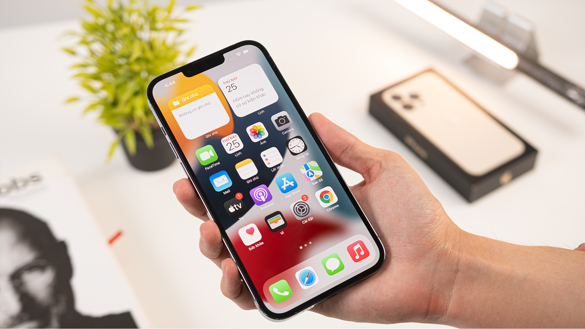

Làm sai thiết kế ban đầu,Apple hạn chế nhập màn hình iPhone
của thương hiệu Trung Quốc
Trang tin The Elec (Hàn Quốc) mới đây đã đưa tin, Apple đang tiến hành cắt giảm đơn đặt hàng đến từ nhà sản xuất màn hình Trung Quốc – BOE sau khi phát hiện hãng làm sai thiết kế màn hình ban đầu. Sau đó, phần đơn hàng bị cắt giảm này sẽ được Apple chuyển qua cho LG.
Trước đó, BOE đã không thể cung cấp màn hình cho Apple đúng mốc thời gian đã định. The Elec cho rằng, tình trạng chậm trễ của BOE là do nguồn cung thiếu thốn. Cụ thể, quá trình sản xuất màn hình cho iPhone sẽ cần đến những con chip IC điều khiển màn hình, thế nhưng BOE lại không tự sản xuất ra những con chip này, thay vào đó là phải nhập IC điều khiển màn hình từ LX Semicon. Tuy nhiên việc sản xuất của LX Semicon đang bị trì trệ do thiếu bán dẫn, từ đó sản lượng sản xuất sẽ không thể đáp ứng được nhu cầu của BOE.
Ngoài lý do khách quan này, The Elec đã phát hiện ra rằng, BOE đã thay đổi thiết kế của tấm nền OLED. Hãng đã tự ý mở rộng mạch của các bóng bán dẫn màng mỏng, việc này có thể sẽ ảnh hưởng nghiêm trọng đến chất lượng màn hình trên điện thoại thông minh. Sau đó, sự việc này đã bị Apple phát hiện và yêu cầu BOE ngừng sản xuất.
Theo nhận định của các chuyên gia, đây là là sai lầm lớn, tuy nhiên, Apple sẽ khó có thể loại BOE ra khỏi chuỗi cung ứng vì trình độ gia công của BOE không hề thua kém Samsung hay LG Display. Hơn nữa, mức giá mà BOE đưa ra rẻ hơn hẳn so với các nhà sản xuất Hàn Quốc, qua đó giúp Apple có được mức chi phí tối ưu nhất trong quá trình sản xuất một chiếc iPhone.
Nguồn: Tổng hợp
Địa chỉ: Phường Ngọc Khánh, Quận Ba Đình, Thành Phố Hà Nội. Tổng đài hỗ trợ: 19001221 - Enail: cskh@hotro.ftelecom.vn
Người thiết kế: Nguyễn Thế Dương - Điện thoại liên hệ: 0389622628
@2022 - Bản quyền thuộc về Nguyễn Thế Dương